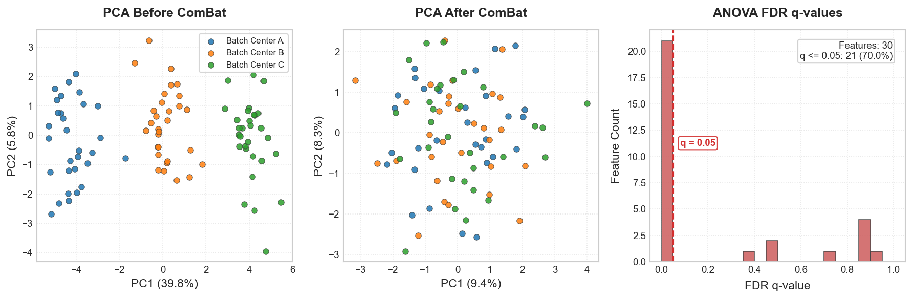

Center-Associated Batch Effects Diagnostics
Radiomics features extracted from medical images are notoriously sensitive to variation in scanner manufacturer, imaging protocols, reconstruction kernels, and slice thicknesses. These variations introduce non-biological variations (batch effects) that can severely confound predictive models, leading to models that learn to classify scanners rather than clinical pathology.
eigenradiomics provides a publication-grade Batch Effect Diagnostics Framework to identify, evaluate, and perform sensitivity checks on scanner/center-associated batch effects. It integrates rigorous preprocessing, feature-level tests, multivariate global diagnostics, ComBat correction sensitivity, and structured Excel/accessible visual reports.
The Preprocessing Pipeline: RadiomicsPrepTransformer
To perform clean statistics, feature distributions must be prepared. Standard scikit-learn preprocessing transformers (such as PowerTransformer or StandardScaler) fail immediately on incomplete matrices containing missing values (NaNs).
eigenradiomics introduces RadiomicsPrepTransformer, a scikit-learn compatible preprocessor designed specifically for sparse radiomics matrices. It performs:
1. Outlier Winsorization: Clips features at custom percentiles (e.g. 1st and 99th) column-by-column to mitigate the impact of extreme radiomics outliers.
2. Yeo-Johnson Transformation: Automatically estimates and applies Yeo-Johnson power transformations per feature to optimize normality. Constant columns are safely bypassed.
3. Standard Scaling: Standardizes features to zero mean and unit variance.
4. NaN Carriage: Natively carries and preserves NaN values during both fitting and transformation, avoiding matrix imputation.
import numpy as np
import pandas as pd
from eigenradiomics.preprocessing import RadiomicsPrepTransformer
# Create a sample radiomics table with a massive outlier and a missing value
df = pd.DataFrame({
"feat_1": [1.0, 2.0, np.nan, 4.0, 500.0], # Outlier 500.0
"feat_2": [10.0, 10.0, 10.0, 10.0, 10.0] # Constant column
})
transformer = RadiomicsPrepTransformer(winsor_lower=0.1, winsor_upper=0.9)
df_trans = transformer.fit_transform(df)
# NaNs are preserved, outliers are clipped, and constant columns are returned safely
print(df_trans)
Feature-Level Statistical Tests
The framework computes detailed feature-level diagnostics, choosing the input matrix to match each test's assumptions: * ANOVA F-statistic and \(\eta^2\) — computed on the preprocessed/transformed features, where the test's normality assumption is more reasonable. Parametric test assessing the difference in feature means across centers; \(\eta^2\) is the proportion of variance explained by center association. * Kruskal-Wallis H-statistic and \(\epsilon^2\) — computed on the raw features. Non-parametric analog of ANOVA, robust to skewed non-normal distributions, so it is applied directly to the untransformed values. * Brown-Forsythe/Levene test — computed on the raw features. Assesses heteroscedasticity (inequality of variance) across centers. * FDR q-values: Corrects all \(p\)-values using the Benjamini-Hochberg false discovery rate procedure.
Multivariate Global Diagnostics
To understand the global impact of batch effects across the entire radiomics feature space, the framework computes:
* Principal Component Analysis (PCA): Project features into low-dimensional orthogonal space. We report the explained variance ratio of PC1 and PC2.
* Silhouette Score: Evaluates cluster separation of centers in the PCA subspace. A higher positive score (\(> 0.1\)) implies strong clustering by center (severe batch effect).
* PERMANOVA Pseudo-F test: A non-parametric permutation-based MANOVA test (using Euclidean distance, 999 permutation steps, and a hardcoded random seed of 42 to guarantee perfect reproducibility). A significant p-value (\(p < 0.05\)) indicates that centers/scanners occupy statistically distinct regions of the feature space.
ComBat Correction Sensitivity Check
If the optional inmoose library (or combat extra) is installed, the framework automatically performs a ComBat sensitivity diagnostic. It runs parametric/non-parametric ComBat adjustment and re-evaluates all feature-level and global diagnostics to show exactly how much center-associated variance remains after correction.
End-to-End Diagnostics Example
Evaluate center-associated batch effects on a wide-format radiomics DataFrame:
import pandas as pd
from eigenradiomics import compute_batch_effects, write_batch_effects_excel, plot_batch_effects
# 1. Load radiomics features and center batch labels
X = pd.read_csv("features.csv", index_col="PatientID")
batch = pd.read_csv("centers.csv", index_col="PatientID")["CenterID"]
# 2. Run the diagnostics pipeline
results = compute_batch_effects(
X,
batch,
permutations=999, # High permutations for publication-ready p-values
no_combat=False # Perform ComBat sensitivity check
)
# 3. View the global diagnostics summary
print(results["global_diagnostics"])
# 4. View detailed feature-level tests
print(results["feature_stats"].head())
Polished Excel Reports & Scientific Plots
Multi-Sheet Excel Reports
Export the complete diagnostics suite to a highly formatted Excel file with:
* Active auto-filters and frozen headers (A2) on all sheets.
* Sleek dark-navy table headers.
* Auto-fit columns with dynamic padding to prevent string truncation.
* Custom decimal formatting (3 decimals for statistical coefficients, 4 decimals/scientific notation for p-values).
Accessible Scientific Figures
Generate high-contrast, publication-grade figures conforming to Oxford University Press (OUP) journals styling rules:
The panels make the batch effect and its correction visually obvious: samples separate by center along PC1 before ComBat and mix after, while the q-value histogram quantifies how many features differ significantly across centers:

ComBat here is a sensitivity check, not a default
compute_batch_effects reports how much center-associated variance would
remain after ComBat; it does not silently harmonize your features. Use the
diagnostics to decide whether harmonization is warranted, then apply it
deliberately.
Accessibility Rules Applied:
* Colorblind-Friendly Palettes: High-contrast colors representing different centers.
* Contrast Outlines: Scatter points and histogram bins are framed with dark boundaries (edgecolor='0.25') to maintain a contrast ratio \(> 3:1\).
* No Redundant Legends: The ANOVA FDR q-value histogram uses direct text annotations to label the primary alpha cut line instead of using separate color boxes.
* Clear Typography: Sized perfectly in sans-serif fonts for comfortable readability.
Pipeline and Preprocessing Integration
You can define a custom scikit-learn preprocessing pipeline, pass it directly to compute_batch_effects, and then reuse the exact same preprocessing parameters in your downstream model:
from sklearn.pipeline import Pipeline
from eigenradiomics.preprocessing import RadiomicsPrepTransformer, RadiomicsFeatureRemover
# 1. Define your standard preprocessing configuration
prep_pipeline = RadiomicsPrepTransformer(
winsor_lower=0.05,
winsor_upper=0.95,
skip_yeo_johnson=False
)
# 2. Diagnose batch effects using your exact pipeline settings
results = compute_batch_effects(
X,
batch,
pipeline=prep_pipeline,
no_combat=False
)
# 3. Inspect which features failed QC or show severe batch effects
qc_failed = results["feature_qc"][~results["feature_qc"]["keep"]]["feature"].tolist()
# 4. Construct downstream machine learning model using the same prep steps
model_pipeline = Pipeline([
("qc_filter", RadiomicsFeatureRemover(features=qc_failed)),
("prep", prep_pipeline),
# ... classifier, feature reducer, etc.
])